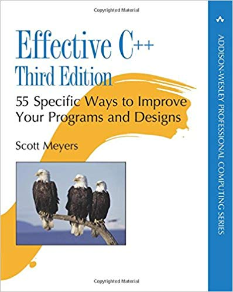
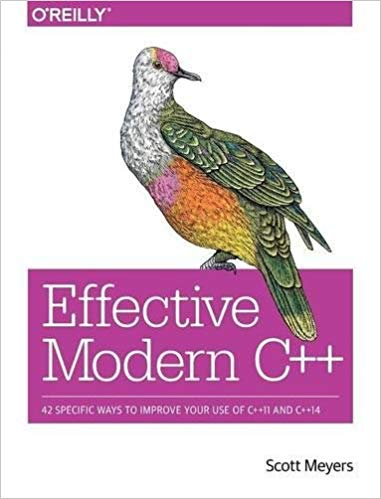

name: title background-image: url(../template/images/Title16x9.jpg) class: title-slide count: false # Systems Programming ## Lecture 8 .smaller[| 19.smaller[th] of November 2018] ### Michel Steuwer .smaller[| [http://michel.steuwer.info](http://michel.steuwer.info/) | [michel.steuwer@glasgow.ac.uk](mailto:michel.steuwer@glasgow.ac.uk)] --- # Level 3 Student Survey .center[ <div style="font-size: 300%"> <a href="http://bit.do/lv3survey">http://bit.do/lv3survey</a> </div> ] <iframe src="http://bit.do/lv3survey" width="1000" height="400" frameborder="0" marginheight="0" marginwidth="0">Loading...</iframe> --- # Recap of last week - **C++** provides **thread** facilities similar to Pthread, but easier to use: .box-80[.fs-90[ ``` auto t = std::thread([](){ printf("Hello World from a thread!\n"); }); t.join(); ``` ]] - For this we learned two useful features of C++: type inference with **`auto`** and **lambda expressions** - We use the idea of temporary **ownership** of a **`std::mutex`** to provide mutual exclusion without the possibility to forget to unlock - To make data structures thread safe we can **encapsulate** an unsafe version and provide a thread safe interface to them - A **task** is an abstraction of a thread, where we no longer think about low level synchronisation mechanisms, but instead about **communication** between tasks - **`std::async`** launches a task and communicates its result back via a **`std::future`** - A **`std::future`** is the reading end of a communication channel. The writing end is called a **`std::promise`** --- # Thread safe interfaces - We discussed last week the encapsulation of a non-thread-safe data structure to make it thread-safe - This might involve changing the interface of the data structure! Let's have a look at `std::list`: .box-80[.fs-90[ ``` while ( list.size() > 0 ) { auto item = list.front(); list.pop_front(); // ... } ``` ]] - In the code snippet we want to remove elements until the list is empty - The interface of `std::list` splits this into three functions: `size`, `front` and `pop_front` - Even if we assume that each individual function is protected with a mutex, there are problems - For example could two threads simultaneously execute `list.front()`;<br/> both access the first element of the list; and then<br/> both threads call `pop_front()`, resulting in the second element to be removed but never accessed --- # A thread-safe interface for `std::list` - Take 1 - To address this we can change the interface into a single function: .box-80[.fs-80[ ``` struct maybe_safe_list { private: std::list<int> list; std::mutex m; public: void push_back(int i) { ... } int size() { ... } int ts_pop_front() { std::unique_lock<std::mutex> l(m); // protect the function body `auto item = list.front(); list.pop_front()`; return item; } }; ``` ]] - We have to adapt the client code as well: .box-80[.fs-80[ ``` while ( list.size() > 0 ) { `auto item = list.ts_pop_front();` /* ... */ } ``` ]] - This resolves the issue, as now `front()` and `pop_front()` have to be executed together - Is the implementation now thread-safe? -- - No! Two threads could execute `size()` simultaneously for a list with 1 element;<br/> both would pass the test and then try to remove two elements from the list - resulting in a runtime failure --- # A thread-safe interface for `std::list` - Take 2 - So we have to combine the `size` check into the same function: .box-80[.fs-90[ ``` // The function might now return no value when the list is empty std::optional<int> ts_pop_front() { std::unique_lock<std::mutex> l(m); // enter critical section if (list.size() > 0) { // check if there is an element to remove auto item = list.front(); list.pop_front(); return item; // return item after it has been removed } else { return {}; // nothing to remove; return empty optional } } // exit critical section ``` ]] - This function can now be used in a thread safe way: .box-80[.fs-90[ ``` auto item = list.pop_front(); while ( item.has_value() ) { printf("%d\n", item.value()); item = list.pop_front(); } ``` ]] - We have seen, that it is sometimes required to change the interface design to make an interface thread-safe! --- # Task management - Last week we have seen `std::async` as a way to launch _tasks_ that communicate their computed results back via an `std::future` - This way we can write applications without caring about low level synchronisation issues - In the rest of the lecture we will investigate a task management system - This is based on the excellent talk _"Better Code: Concurrency"_ by Sean Parent<br/> http://sean-parent.stlab.cc/papers-and-presentations/#better-code-concurrency - Sean Parent has more excellent tasks about modern `C++` on his website --- class: split-60 # A basic task system .left-column[ - We start by building a task system that operates with a single queue to manage the incoming tasks - Multiple threads will take tasks out of the queue and execute them concurrently - This follows the guidelines of an multi-threaded programming guide published in 2010 by Oracle</br> .fs-60[(https://docs.oracle.com/cd/E19253-01/816-5137/ggedn/index.html)] ] .right-column[.center[  ]] --- # .fs-70[`std::function`] for passing functions as arguments - Each task is defined by the function it executes - To add a task into our task system we provide a function as argument - In `C` we have used function pointers for this: .box-80[.fs-90[ ``` void foo() { ... } void async( void(*f)() ) { ...} int main() { async(foo); } ``` ]] - In `C++` we use `std::function`: .box-80[.fs-90[ ``` void foo() { ... } void async( std::function<void()> f ) { ... } int main() { async(foo); } ``` ]] - We specify the type signature of the function in the `<` angle brackets `>`: `std::function<void()>` --- # The basic queue implementation .box-90[.fs-90[ ``` struct notification_queue { private: std::list<std::function<void()>> q; // this is our list of tasks; each task is a function std::mutex m; // a mutex to protect the queue std::condition_variable ready; // a condition variable indicating available tasks public: std::function<void()> pop() { // pop removes a task from the queue std::unique_lock<std::mutex> lock(m); // enter a critical section to protect the std::list ready.wait(lock, [this]{ return !q.empty(); }); // it waits until a task is in the queue auto f = q.front(); // access the first task ... q.pop_front(); // ... remove it from the queue return f; // ... and return it } // exit critical section void push(std::function<void()> f) { // push adds a task to the queue { std::unique_lock<std::mutex> lock(m); // enter critical section to protect the std::list q.push_back(f); // add task f to the queue } // exit critical section ready.notify_one(); // notify a waiting thread that a task is in the queue } }; ``` ]] --- # The basic task system implementation .box-90[.fs-90[ ``` struct task_system { private: const int count = std::thread::hardware_concurrency(); // init with number of cores std::vector<std::thread> threads; // a vector to store all the worker threads notification_queue q; // the queue to store the tasks void run(int i) { // function executed by each worker thread while (true) { auto f = q.pop(); f(); } // forever, we remove a task and execute it } public: task_system() { // This is the constructor printf("Start task system with %d threads\n", count); for (auto n = 0; n != count; n++) { // for each hardware core ... threads.emplace_back([this, n](){ run(n); }); } // ... we create a thread executing run } ~task_system() { // This is the destructor for (auto n = 0; n != count; n++) { threads[n].join(); } // we ensure to wait for all threads } void async(std::function<void()> f) { // This is the interface to add tasks to the system q.push(f); // we simply push the task into the queue, which will notify a waiting thread } }; ``` ]] --- # Stopping Tasks .box-90[.fs-90[ ``` struct notification_queue { private: std::list<std::function<void()>> q; std::mutex m; std::condition_variable ready; bool done = false; // this flag indicates the end of executing tasks public: // We change the return type, as pop might now return 'nothing' when done is set std::optional<std::function<void()>> pop() { std::unique_lock<std::mutex> lock(m); ready.wait(lock, [this]{ return (!q.empty()) || done; }); // if done is set we will not wait if (q.empty()) return {}; // if the queue is empty (because done was set) we return 'nothing' auto f = q.front(); q.pop_front(); return f; } void push(std::function<void()> f) { ... } void setDone() { { std::unique_lock<std::mutex> lock(m); // enter critical region to protect 'done' done = true; // set done } ready.notify_all(); // Notify all threads that they should finish } }; ``` ]] --- # Stopping Tasks .box-90[.fs-90[ ``` struct task_system { private: const int count = ... ; std::vector<std::thread> threads; notification_queue q; void run(int i) { while (true) { auto optional_f = q.pop(); // we now return an optional if (!optional_f.has_value()) return; // if 'nothing' was returned we exit the function auto f = optional_f.value(); // if something was returned we get the task out ... f(); // ... and execute it } } public: task_system() { ... } ~task_system() { q.setDone(); // when we destroy the task system, let all threads now they should finish ... for (auto n = 0; n != count; n++) { threads[n].join(); } // ... and then wait for them } void async(std::function<void()> f) { ... } }; ``` ]] --- class: split-60 # Performance of the simple task system .left-column[.center[  ]] .right-column[.center[  <br/> Pretty bad performance, as all threads access the same queue there is a lot of blocking an waiting ]] --- class: split-60 # Take 2: Improved task system - Multiple Queues .left-column[ - **Idea**: to reduce blocking and waiting time use multiple queues - A scheduling policy will decide in which queue to enter the task - Each thread will exclusively access tasks from their own queue - Different scheduling policies could be implemented, we pick a very simple, but widely used one: _round robin_ - Every time a task has been added to a queue we add the next task to the next queue - Once we arrive at the last queue, we start again with the first queue - For this implementation we use the exact same queue implementation as before , we only change the task system ] .right-column[.center[  ]] --- # The multi-queue task system implementation .box-90[.fs-90[ ``` struct task_system { private: const int count = ...; std::vector<std::thread> threads; // we now have one queue per thread std::vector<notification_queue> q = std::vector<notification_queue>(count); // this 'atomic' int can be incremented thread-safely without requiring a lock std::atomic<int> index = 0; void run(int i) { while (true) { auto optional_f = q[i].pop(); // now every thread pops the tasks from their queue if (!optional_f.has_value()) return; auto f = optional_f.value(); f(); } } public: task_system() { ... } ~task_system() { for (auto n = 0; n != count; n++) { q[n].setDone();} // indicate each queue to finish for (auto n = 0; n != count; n++) { threads[n].join(); } } void async(std::function<void()> f) { // This implements the round robin scheduling auto i = index++; // every time increment the index by one q[i % count].push(f); // the modulo makes sure that we are staying in bound } }; ``` ]] --- class: split-60 # Performance of multi-queue task system .left-column[.center[  ]] .right-column[.center[  <br/> Better performance, but still not great. Some threads might have more work than others. ]] --- class: split-60 # Take 3: Improved task system - Work stealing .left-column[ - **Idea**: Let a thread try to help others by stealing a task - if one is available - from the other threads queues. If no task can be stolen, wait on your own queue for a task to arrive. - Work stealing only works efficiently if we can avoid blocking (i.e. waiting for a task to arrive) when we steal - In `C++` we can _try to acquire_ a `mutex`.<br/> If the mutex is locked we do not block: .box-90[.fs-90[ ``` void try_lock() { std::unique_lock<std::mutex> lock(m, std::try_to_lock); if (!lock) { // if not locked successfully return; } // do not enter critical section // otherwise enter critical section // ... } ``` ]] ] .right-column[.center[  ]] --- # Updated Queue - `try_push`, `try_pop` .box-90[.fs-90[ ``` struct notification_queue { private: std::list<std::function<void()>> q; bool done=false; std::mutex m; std::condition_variable ready; public: // new function: tries to pop, if queue is locked it will return 'nothing' std::optional<std::function<void()>> try_pop() { std::unique_lock<std::mutex> lock(m, std::try_to_lock); // do not wait if the mutex is locked if (!lock || q.empty()) return {}; // we have to(!) check if the lock was acquired auto f = q.front(); q.pop_front(); return f; } // new function: tries to push, if queue is locked it will return false bool try_push(std::function<void()> f) { { std::unique_lock<std::mutex> lock(m, std::try_to_lock); if (!lock) return false; // return false to indicate that the push has not been successful q.push_back(f); } ready.notify_one(); return true; // return true if the task was successfully added to the queue } std::optional<std::function<void()>> pop() { ... } void push(std::function<void()> f) { ... } void setDone() { ... } }; ``` ]] --- # Updated task system - `run` .box-80[.fs-90[ ``` struct task_system { private: // ... void run(int i) { while (true) { std::optional<std::function<void()>> optional_f; // first try to steal from all other queues for (auto n = 0; n != count; n++) { optional_f = q[ (i + n) % count ].try_pop(); if (optional_f.has_value()) break; // once a steal was successful -> stop looking } // if we have not stole successfully, we are accessing our own queue ... if (!optional_f.has_value()) { // ... and potentially block and wait optional_f = q[i].pop(); if (!optional_f.has_value()) return; // if our queue returns no task, we are done } // if we (somehow) got a task ... auto f = optional_f.value(); // ... access ... f(); // ... and execute it } } public: task_system() { ... } ~task_system() { ... } void async(std::function<void()> f) { ... } // see next slide }; ``` ]] --- # Updated task system - `async` .box-80[.fs-90[ ``` struct task_system { private: // ... void run(int i) { ... } public: task_system() { ... } ~task_system() { ... } void async(std::function<void()> f) { auto i = index++; // first try to insert in all other queues for (auto n = 0; n != count; ++n) { // if an insertion is successful, return from the function if (q[ (i + n) % count ].try_push(f)) return; } // only if no other insertion was successful, add in our own queue // and potentially block q[i % count].push(f); } }; ``` ]] --- class: split-60 # Performance of work stealing task system .left-column[.center[  ]] .right-column[.center[  <br/> Very good performance.<br/> Work stealing is a crucial technique for a high-performance task system ]] --- # System Programming Recap - Part 1 - In this course we have studied systems programming. We have learned, that: - **data types** give bit representations in memory a meaning - **structs** allow us to implement custom data structures (like link lists or trees) - every variable is stored at a fix location **memory** - a **pointer** is a variable storing the address of a memory location - memory on the **stack** is automatically managed but memory on the **heap** must be managed manually - to organise resource and memory management we should think about **ownership** - in C++ ownership is implemented by tying the resource management to the **lifetime** of a stack variable - there exist a set of **smart pointers** and **containers** for easy and non-leaking memory management - **debuggers**, **static** and **dynamic analysis tools** help to detect and fix bugs --- # System Programming Recap - Part 2 - In the second part of the course, we talked about programming concurrent systems. We learned, that: - **concurrency** is a programming paradigm to _deal with lots of things at once_ - **parallelism** is about _doing lots of things at once_ and this way making a program run faster - multiple **threads** share the same address space of a single **process** - `Pthreads` is a threading implementation in `C`, `C++` provides threads in its standard library - **mutual exclusion** ensures that two threads don't simultaneously enter their **critical section** - **condition variables** are a synchronisation mechanism to avoid busy waiting for a condition - the bounded buffer is an example of a **monitor**, an object that encapsulates low level synchronisation - **tasks** provide an abstraction over threads:<br/> we thing about communicating tasks rather than threads modifying shared state - a **task system** allows to efficiently use hardware threads using multiple queues and **work-stealing** --- # Where to go from here? - There a multiple _systems_ courses that build up on the ideas you have learned in this course: - _Operating Systems_ - _Networked Systems_ - _Distributed and Parallel Technologies_ - _Advanced Systems Programming_ - For all of these it is important to have a good understanding of **memory** as discussed it in this course - In _Advanced Systems Programming_ you are going to learn _Rust_ - a modern systems programming language - that enforces the idea of ownership to guarantee concurrent data race free programs --- # More Reading and Viewing Tips - You have seen pretty much everything there is too see of `C` in this course - You have pretty much seen only a very small fraction of `C++` in this course - There is much more to discover in `C++`. These two books are good intermediate reading material: <div style="text-align: center"> <div style="width: 40%; float: left;"> <br/> <span style="font-size: 80%">Great best practice guide of C++</span> </div> <div style="width: 40%; float: left;"> <br/> <span style="font-size: 85%">Great best practice guide of modern C++.<br/> Complementary to the first book</span> </div> <div style="clear: both;"></div> </div> - There are many great talks about `C++` on Youtube (and other video platforms): - _Sean Parents_ series on _Better Code_: .fs-60[http://sean-parent.stlab.cc/papers-and-presentations/] - The _CppCon_ video channel: .fs-60[https://www.youtube.com/user/CppCon/videos] --- # Next week - Guest lecture:<br/> **Alastair Murray** from **Codeplay** will be talking about his industry experience in systems programming - Codeplay is a Edinburgh based company working on _compilers_, _debuggers_, _runtimes_, _testing systems_, and other software _development tools_. - They have had (and currently have) Glasgow University students for placements and internships .center[  ] --- name: closing background-image: url(../template/images/Closing16x9.jpg) class: title-slide, text-white count: false # Systems Programming ## Lecture 8 .smaller[| 19.smaller[th] of November 2018] ### Michel Steuwer .smaller[| [http://michel.steuwer.info](http://michel.steuwer.info/) | [michel.steuwer@glasgow.ac.uk](mailto:michel.steuwer@glasgow.ac.uk)]